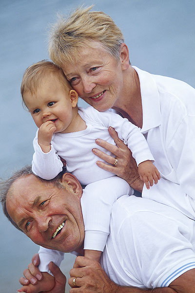

Consejos ante el diagnóstico

Mantener una actitud positiva ante la enfermedad no es fácil. Pasar por momentos de incertidumbre y desesperanza, es normal. Reconocerlo es parte de una adaptación positiva a la enfermedad.
-
Infórmate. Habla con el equipo médico. Intenta tomar una actitud activa en los tratamientos y participar en la toma de decisiones relacionadas con tu salud.
-
Confía en el equipo de profesionales que te atienden y pide ayuda y consejo cuando lo necesites
-
Continúa realizando tus rutinas diarias en la medida de lo posible, pero sin exigirte demasiado. Esto será bueno para ti y para tu familia.
- Pide ayuda. Hay muchos recursos de apoyo tanto familiares como sociales que están a tu alcance.
- No conviertas la enfermedad en el centro de tu vida. Intenta seguir manteniendo tu estilo de vida.
- Da tiempo a los demás para acostumbrarse a los cambios.
-
Planifica las actividades del día y de la semana. Es importante que tengas en cuenta que durante los tratamientos pueden aparecer ciertos efectos secundarios (náuseas, vómitos, problemas bucales, fatiga, etc.) que pueden interferir en tu vida diaria y puedes necesitar ayuda. Tenlo en cuenta en esta planificación para que sea más fácil y no te genere malestar.
-
Realiza las actividades de ocio que te gusten, solo o en compañía. Si no puedes hacer las mismas cosas que antes, busca otras que te ayuden a sentirte bien.
-
No te aísles. Rodéate de aquellos que te hagan sentirte bien. Es agradable estar acompañado y ayuda a sentirse mejor, lo cual no significa que puedas estar solo en algún momento, si es que lo deseas o necesitas.
- Estar con gente facilita el desahogo y ver desde otro enfoque las preocupaciones y pensamientos negativos
- No temas ser una “carga” para la gente que te quiere y que se preocupa por ti.
-
Es conveniente tener una actitud optimista y positiva, lo que no significa que no puedas pasar por momentos de tristeza o malestar. Si en ocasiones te sientes así, no te sientas culpable.
-
Aprende a CUIDARTE.Tu salud es muy importante pero tú lo eres más.